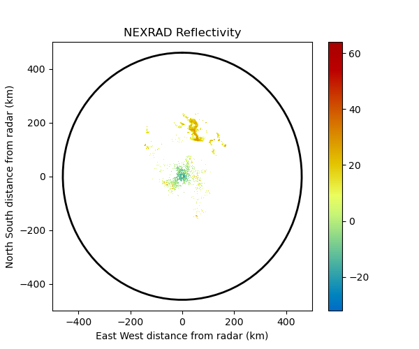

Note
Click here to download the full example code
Create a plot of NEXRAD reflectivity¶
An example which creates a plot containing the first collected scan from a NEXRAD file.
print(__doc__)
# Author: Jonathan J. Helmus (jhelmus@anl.gov)
# License: BSD 3 clause
import matplotlib.pyplot as plt
import pyart
from pyart.testing import get_test_data
# open the file, create the displays and figure
filename = get_test_data('Level2_KATX_20130717_1950.ar2v')
radar = pyart.io.read_nexrad_archive(filename)
display = pyart.graph.RadarDisplay(radar)
fig = plt.figure(figsize=(6, 5))
# plot super resolution reflectivity
ax = fig.add_subplot(111)
display.plot('reflectivity', 0, title='NEXRAD Reflectivity',
vmin=-32, vmax=64, colorbar_label='', ax=ax)
display.plot_range_ring(radar.range['data'][-1]/1000., ax=ax)
display.set_limits(xlim=(-500, 500), ylim=(-500, 500), ax=ax)
plt.show()
Total running time of the script: ( 0 minutes 3.179 seconds)